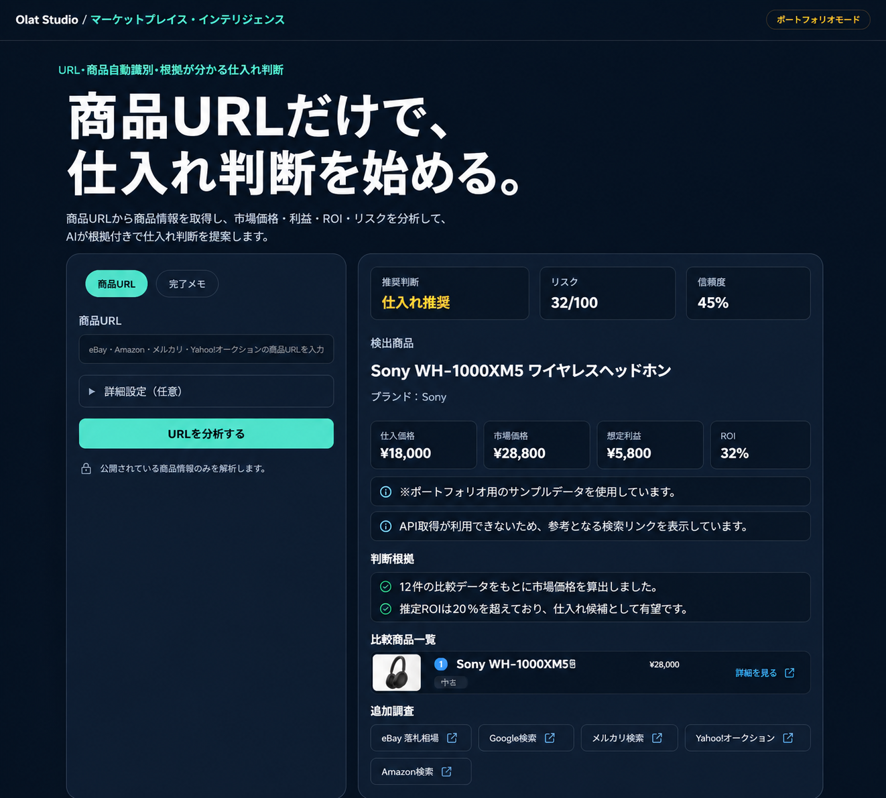

⌕
競合確認に追われる
価格や品ぞろえを何度も見比べるが、情報が点在して判断に使いにくい。
MARKET INTELLIGENCE × AUTOMATION
EC・リユース・ニッチ市場の「調べる」「比べる」「まとめる」を、意思決定に使える情報と仕組みに変えます。
相談内容が固まっていなくても大丈夫です。
YOUR CHALLENGE
価格や品ぞろえを何度も見比べるが、情報が点在して判断に使いにくい。
Excel・CSV・商品登録など、同じ作業の繰り返しに時間を取られている。
新商品や海外展開に関心はあるが、どこから調べ、何を比べるべきか分からない。
WHAT WE DO
課題の整理から情報収集、分析、日々使える仕組みへの落とし込みまで。必要な範囲を、事業に合わせて組み立てます。
価格帯、商品構成、販売チャネル、訴求方法を比較し、狙うべきポジションと次の打ち手を整理します。
価格確認、情報収集、Excel・CSV処理など、繰り返し業務を見直し、無理なく使い続けられる形にします。
散らばった数字を一画面に集約。状況の把握からアクションまでを、迷わず進められる画面を設計します。
日本から海外、海外から日本へ。市場性、競合、販路候補を調べ、進出判断に必要な情報を整理します。
OUR APPROACH
新しいツールを入れることが目的ではありません。現場を理解し、効果が見込めるところから小さく始め、使える状態まで伴走します。
相談できる内容を聞く ↗事業・市場・いまの業務を理解する
優先して解くべき課題を見つける
必要な分析や仕組みをつくる
使いながら改善し、定着させる
SELECTED WORK
調査結果をレポートで終わらせず、毎日の判断に使える形へ。課題に合わせた小さな仕組みから構築できます。

PORTFOLIO / WEB APPLICATION
商品URLから仕入価格、市場価格、想定利益、ROI、リスクを整理。複数の情報を行き来せず、仕入れ判断に必要な材料を一画面で確認できます。
NICHE FOCUS
商品の個体差や相場観が重要な領域、小規模でもデータ活用の効果が出やすい領域を得意としています。
START A CONVERSATION
価格調査、Excel作業、競合確認、海外市場の検討など。まずは今、負担になっていることを聞かせてください。
無料で相談する ↗